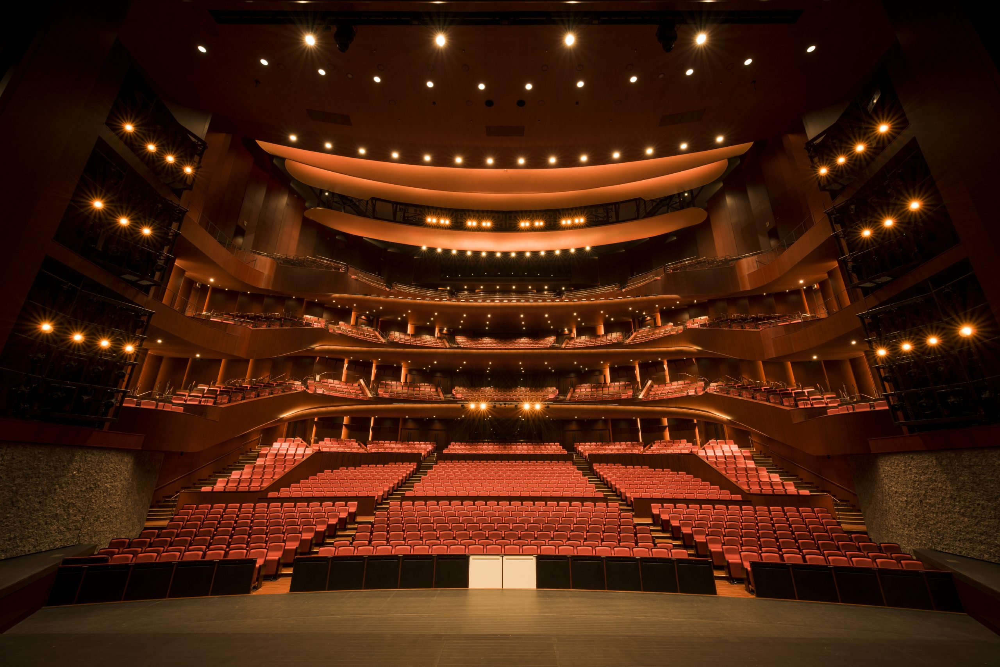
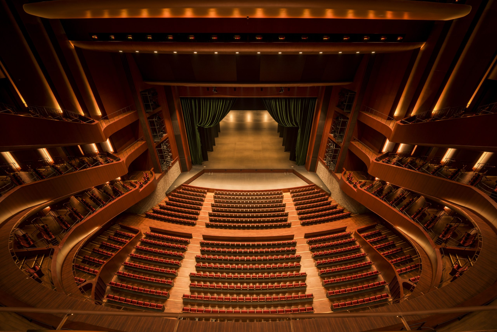

あなたは、どの立場で参加しますか。
創る人へ
あなたは何を創る？ 見せてくれ。全部見届けるから。作品募集は近日開始。応募要項の公開をメールでお知らせします。
募集開始の通知を受け取る For Creators創る人へ
物語を解き放て。世界中から、AIを創作に用いた映像作品を募集します。
応募要項を見る 応募要項（受付終了） For Audiences観る人へ
暗闇の中で、大スクリーンに世界が立ち上がる。物語を、全身で浴びる一日。チケット発売をメールでお知らせします。
発売通知を受け取る For Audiences観る人へ
暗闇の中で、大スクリーンに世界が立ち上がる。隣の誰かが息を呑み、笑い、泣く。物語を、全身で浴びる一日。
チケット・来場案内 For Partners支える人へ
次の創り手と、最初に出会う場所。交流会でのクリエイターとの接点を中心に、協賛パートナーを募集しています。
協賛について物語を浴びる。創造力を知る。未来を起動する。
上映、講演・創作講座、交流会を、別々の企画ではなく一つの流れとして設計します。鑑賞だけで終わらない、次の創造へつながる一日。
-
I
Daytime＜仮＞
物語を浴びる
映画祭（上映・作品表彰）
世界中から集まった作品を、大スクリーンで。会場の笑い、静寂、驚きまで含めて、一つの作品を受け取る。優れた作品とクリエイターを称える授賞式も。
-
II
Afternoon＜仮＞
創造力を知る
クリエイター講演・創作講座
AIを実際の映像制作に使う創り手が、発想と試行錯誤を共有。他者の創造力に触れ、「自分にも創れるかもしれないもの」が少し増えて帰る。
-
III
Evening＜仮＞
未来を起動する
交流会（Incubation）
クリエイターと企業、学生とプロ、日本と海外。「そこがつながるのか」という出会いから、次の作品、チーム、仕事が動き始める。
そこで生まれた作品が、翌年の映画祭で上映されるかもしれない。
最初の炎を、見逃さないために。
募集開始・審査員発表・チケット発売を、メールでお届けします。
あなたは何を創る？見せてくれ。
応募締切 2027年3月31日（水）23:59。3〜15分・16:9・ジャンル不問。グランプリ、審査員特別賞、スポンサー特別賞、SAPPORO賞、優秀作品賞。
同じ時間、同じ場所で、一つの物語を。
2027年5月4日、札幌文化芸術劇場 hitaru。1日通し券なら上映・講演・交流会のすべてを体験できます。席数に限りがあります。作品の応募も受付中です。
本日、開催中。
当日券・タイムテーブル・会場アクセスはこちら。
次は、あなたの物語を。
第1回の受賞作と記録を公開中。次回の募集開始はニュースレターでお知らせします。
開催概要

- 名称
- 札幌国際AI映画祭
Sapporo International AI Film Festival & Incubation - 日程
- 2027年5月4日（火・祝）
開場 10:00／終演 21:00 ＜仮＞ - 会場
- 札幌文化芸術劇場 hitaru
札幌市中央区北1条西1丁目 札幌市民交流プラザ内 ＜要確認＞ - 内容
- 入選作品上映・授賞式／クリエイター講演・創作講座／交流会
- 主催
- 札幌国際AI映画祭実行委員会
札幌すごいAI会 - 後援・協力
- ＜仮・調整中＞
審査員・登壇者
技術の新しさではなく、その物語が人の心をどこまで動かしたかを見届ける人たち。＜顔ぶれは調整中・順次発表＞